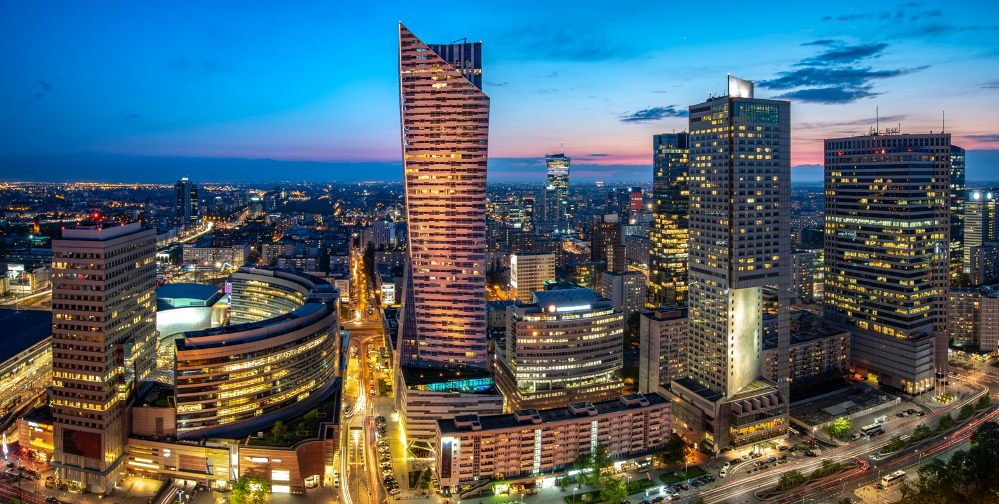

Welcome at Warsaw City Fan Club society homepage!
- This is the website for the society of fans of Warsaw city. We have many things in common. We enjoy our time when we explore the city on a bicycle or foot, with or without children. Here we post our favourite locations in the city, selected cafes and the best photos of Warsaw. Share with us what you think Warsaw has to offer for a relaxing day in the city. Anyone can contribute! See the details below in our sections 🔗.
- Cafes - have a look at our selection of cafes where you can have a break while visiting the city. You can send us an email🔗with your recomendations!
- Must See - explore the locations in Warsaw while you are on a short 1-day visit or for the first time. Maybe you would like to recommend a location? We are happy to hear from you - contact us🔗.
- Photos - have a look at photographs of different areas of Warsaw, to see what it has to offer. Did we miss some place? Do not hesitate, we are a society here and you are part of it. Send us photos🔗! We pick best ones.
-
🔗 Underground Map - have a look at Warsaw Underground Map.
You can also visit Warsaw City Metro - website to help you find your way. - 🔗 Apps - our recomended, essential smartphone apps which will help you to get the most of each visit.
- 🔗Contact us - in case you need any help please contact us - details in the footer section below.
Our sections:
We hope anyone can enjoy their time in our favorite city!
